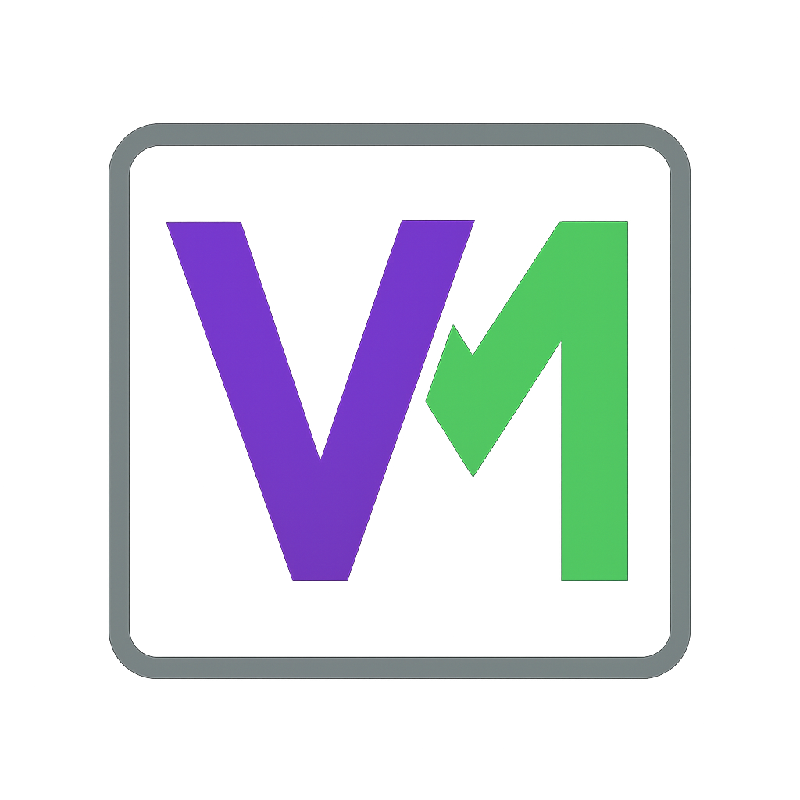

VeilMark Beta
VeilMark is a Discord bot that detects AI-generated messages, deepfakes, and synthetic images in your community.
🧠 What It Can Do
- Detects ChatGPT-style AI messages
- Flags AI-generated images (e.g., Stable Diffusion, Midjourney)
- Identifies GAN-based deepfakes or face swaps
- Scans memes and screenshots using OCR
🧪 How to Join the Beta
We're currently limiting beta access to a small group of communities while we refine our models and features.
📩 To request access, email us at:
veilmark.bot@gmail.com
Please include:
- Your Discord server name
- Approximate member count
- Any moderation or community concerns you're trying to address
📝 What to Expect
- Easy slash commands like
/vm_check_user, /vm_check_image
- Real-time scans of text and image content
- Tiered access for advanced features (OCR, autoscan, etc.)
- Ongoing updates and model improvements during beta
📣 Feedback Welcome
If something gets flagged incorrectly, or you have suggestions, we'd love to hear from you.
You can reply via email or use the /vm_feedback command (if enabled).